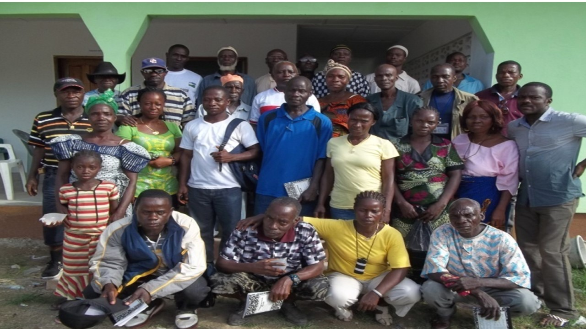
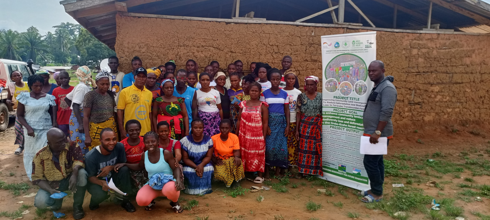
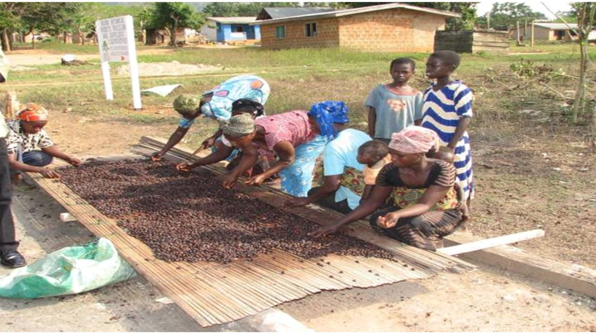

Tubmanburg, Bomi County
Enhancing AMENU Farmers Coorperative Capacity


This project strengthens the AMENU Farmers Cooperative through practical training, group organization,
and restoration planning. Members are building skills in soil protection, seedling care, and sustainable
community land management to improve production while restoring degraded landscapes.
Project Title: "Enhancing AMENU Farmers Coorperative Capacity in Understanding of Climate Change and its agdaptation procedures." The project sponsored by OXFAM -UK. A three months project implemented in 10 communities located in Gbarzon district, Grand Gedeh County.
Project title: "Strengthening Edina Women Cooperative Capacity in Climate Smart Agriculture" Sponsored by United Nation Women. The project trained one hundred and fifty (150) members in understanding climate change effects, causes, international and national efforts in combatting climate change (adaption). Building the capacity of rural women in Leadership, advocacy, marketing strategies, and cassava processing and preservation and cassava machine maintenance in four communities (Rivercess and Grand Bassa Counties) Project Achievement: Trained 150 members in the best cassava production practices and value addition (Garri production) - Donated one cassava processing machine and built storage with technical support for the production and processing of Garri.
Paynesville, Montserrado
Establishing Botanical Garden for income generation


Project title: "Establishing Botanical Garden for income generation (ecotourism) within the community proximity to East Nimba Nature Reserve" Sponsored by global Environment Facility /United Nation Development Program. The project was implemented in Nimba County (Liagbala, Yekepa, Zortapa and Yolowee).
Project Achievement: - Strengthened local community and CBOs in understanding of climate change effects, causes, methodologies of combattng climate change (adaptation& mitigation). - Established and demarcated three acres of botanical garden of insitu and ex- situ plant species specifically medicinal, spices, timber and fruit trees - Established schools nature clubs and community conservation society - Established gene and seed bank of timber indigenous and extotic plant species.
Monrovia
Campagn against the destruction of Liberian Greenbul and its habitat
This campaign builds public awareness and local leadership to protect critical bird habitats under pressure
from destructive practices. Training youth leaders in climate data, advocacy, and practical adaptation
solutions is central to sustaining long-term conservation results.
Gbarnga, Bong County
Community Tree Nurseries


Project title: "Income Generation and Livelihood Development Project" Sponsored by Inter-Church Cooperation for Development, The Netherlands (ICCO). SEC partnered with Agribusiness in Sustainable Natural African Plants Products (ASNAPP). The project was implemented across 9 counties: Nimba, Grand Gedeh, Gbarpolu, Cape Mount, and Sinoe counties.
Project Achievement: Built the technical and managerial capacities of value chain actors in high value horticultural products to increase income and improve livelihoods. Investigated the suitability of growing specific natural products within Liberia and helped identify and select marketable and profitable natural products for commercialization. Assisted in the establishment of farms and collection of wild medicinal plants for domestic and export markets. Assisted in procuring appropriate planting materials (seeds or vegetative cuttings) for cultivation. Developed quality control systems both in the field through post-harvest handling and processing to meet market requirements. Developed and conducted applied research and production trials in variety evaluation.
Supplied improved planting material (African Hot Pepper, Grains of Paradise and Black Pepper). Established nurseries to supply over 300,000 seedlings of NTFP, including production, harvesting and postharvest handling systems needed to meet buyers' requirements. Provided training and built capacities of farmers and technical officers in good agricultural and collection practices, sustainable harvesting and postharvest handling techniques, quality control and assurance, and market analysis. Linked lead entrepreneurs and lead farmers to micro-finance institutions. Built the capacity of 300 farmers on BDS and formed at least 2 cooperatives. Organized 6 farmer-to-farmer (F2F) exchanges. Trained 150 members in the best cassava production practices and value addition (Garri production). Donated one cassava processing machine and built storage with technical support for the production and processing of Garri.
Marshall Wetlands
Revamping Traditional Conservation and promotion of alternative livelihoods;
Project title: "Revamping Traditional Conservation and promotion of alternative livelihoods" sponsored by GEF/UNDP ($18,000.00). The project focused on restoring and promoting indigenous conservation practices while building sustainable alternative livelihoods for local communities. Activities included conducting biodiversity conservation awareness through video presentations, establishing and supporting a conservation culture troupe, and training communities in climate smart agriculture through demonstrated farmers field business schools.
Project Achievement: Established a vegetable garden for experience sharing. Conducted and collected data on traditional conservation knowledge. Trained 100 women in the production of energy efficient stoves and fish drying ovens. Produced cartoon journal illustrations of indigenous knowledge on conservation, specifically on totem species.
Margibi County
Civil Society Independent Monitoring of Forest Law Enforcement
This project supports local resilience hubs with reliable clean power for emergency communications,
information sharing, and coordinated response services. Local technicians are trained to maintain and
manage systems for long-term impact.